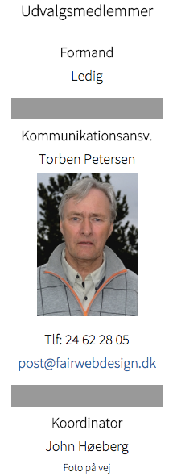
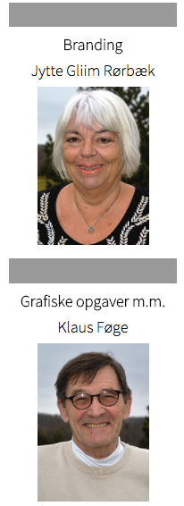
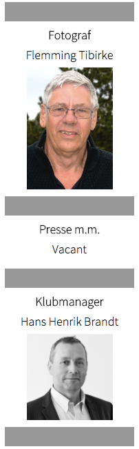

<div class="pages">
  <div data-page="markeds-kommunikationsudvalg" class="page navbar-fixed toolbar-fixed" >
    <div class="navbar">
      <div class="navbar-inner">
        <div class="left">
          <a href="#" class="link back icon-only"><i class="icon icon-back"></i></a>
          <!-- <a href="#" class="back link icon-only"><i class="icon icon-back"></i></a> -->
        </div>
        <div class="center">Markeds & Kommunikationsudvalg</div>
        <!-- <div class="right"></div> -->
        <div class="right">
        </div>
      </div>
    </div>
    <div class="page-content" style="padding-top:45px;">
       <div class="content-block">
          <p> Hovedområderne for udvalget er at
            <br /><br />
            • tilrettelægge og gennemføre markedsføringstiltag for at sikre den løbende tilgang af nye medlemmer<br />
            • arbejde for klubbens branding og image<br />
            • understøtte relevant og god information internt og eksternt<br />
            • samarbejde med øvrige udvalg, der har behov for kommunikation eller markedsføring<br />
            • arbejde for at understøtte klubbens vision</p>
          <br />
          <br />
          
        </div>
    </div>
    </div>
    </div>
  </div>
</div>
